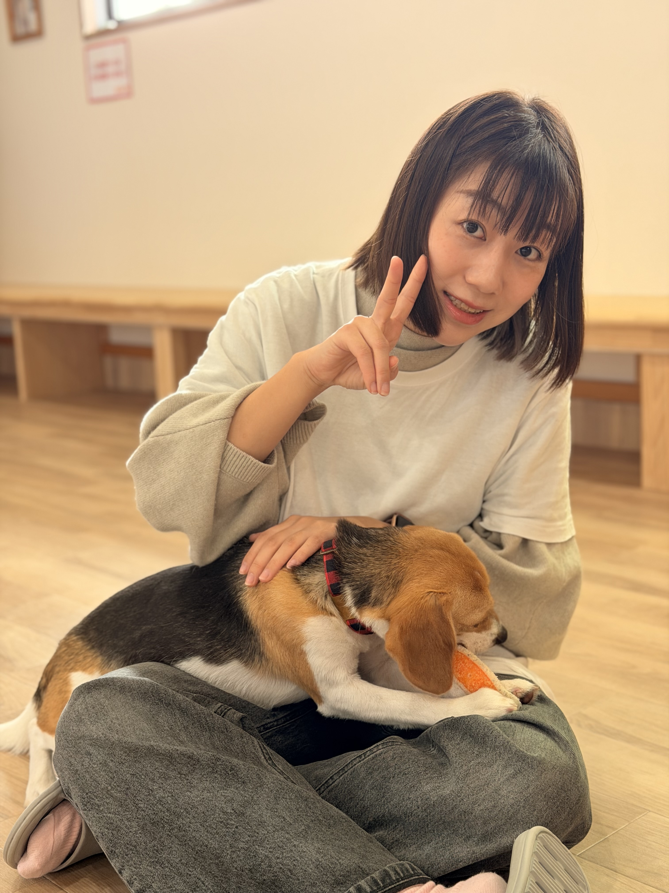

Content
I'm Zyal Wang. I turn curiosity into things you can click. Digital marketer by day, creator and AI explorer always. Based in Japan. I tell stories through data, build ideas through code, and document life because it helps me think. This is my digital garden.
Currently exploring → vibe coding at midnight with Lovable
I don't wait until I'm ready.
I start — and clarity follows.
— a personal operating principle
27K+
Likes & saves on Rednote
5
AI-built side projects
Healthcare
Marketing that matters
Global
Cross-border content
About

A restless mind between Tokyo and the internet
I'm Zyal. Most days I work in healthcare marketing — translating complex ideas into stories that actually connect. But when the laptop stays open past midnight, it's because I'm chasing a thread: wiring up an AI experiment, sketching a new project, or writing something I'll probably post on Rednote before breakfast.
I'm happiest in the overlap — where marketing meets making, where a weekend prototype teaches more than any course, and where the best ideas come from following your curiosity instead of a plan.
Projects & Experiments

Quiet Town
What if a website could feel like a quiet afternoon? An interactive space where mood shapes the experience.
Built in one night to explore calm in digital space View project ↗
My Childhood Global
I wondered: do people from different countries remember childhood the same way? So I built a place to find out.
Started from a late-night conversation about nostalgia View project ↗
Legend Derby
Part game, part story, part excuse to play with character design. Horse racing meets creative fiction.
An experiment in playful worldbuilding with AI View project ↗
Ramen Tour
A love letter to noodle soup. Track, rank, and map the best ramen spots — because someone had to.
Born from eating too much ramen and wanting to rank it all View project ↗
Marketer Life
A tongue-in-cheek career simulator about surviving corporate marketing — emails, meetings, stress, and all.
Made because if you can't laugh at the job, what can you do View project ↗What I'm Exploring
AI × creativity
The return of personal websites
Writing = thinking
Building without permission
Internet as a playground
Vibe coding as a creative medium
Cross-cultural storytelling
Life
Wandering
Getting lost on purpose — in back streets, train stations, and cities I don't know yet.
Thinking Out Loud
Reflections on work, identity, and what it means to live between cultures.
Small Rituals
Morning coffee, evening walks, weekend reads — the quiet structure behind the noise.
What I Do
Digital Marketing
SEO, paid media, campaigns — the kind of work where creativity and spreadsheets coexist.
Healthcare
Marketing in an industry where trust matters more than trends. I take that seriously.
AI & Vibe Coding
Prompting, prototyping, building things that didn't exist yesterday. The fun part.
Websites & Automation
Building pages, reading analytics, automating the boring stuff so I can focus on the interesting stuff.